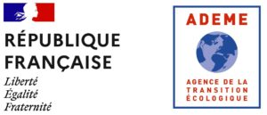
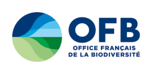

L'AFES est la branche française de l'Union Internationale de Science du Sol (IUSS, International Union of Soil Science)
CONNEXION
L'AFES est la branche française de l'Union Internationale de Science du Sol (IUSS, International Union of Soil Science)
CONNEXION
AFES
Association Française pour l'Étude du Sol
L'association qui rassemble toutes les personnes intéressées par l'étude des sols : chercheur·ses, enseignant·es, étudiant·es, agriculteur·rices et acteur·rices de la société civile.
Centre de ressources · webinaires, présentations et documents pour mieux connaître les sols et les enjeux de leur préservation
Ce que vous propose l'AFES

Se former
Décrire un sol sur le terrain, animer la Fresque du Sol, devenir référent·e des sols forestiers.
Voir les formationsDécouvrir nos projets
Journée Mondiale des Sols, Festival européen Sols & Arts, SOILSCAPE, Fresque du Sol…
Voir les projetsTrouver une ressource
Centre de ressources, revue Étude et Gestion des Sols, Référentiel pédologique.
ExplorerFaire reconnaître ses compétences
Reconnaissance des compétences en pédologie, réseaux de référent·es.
En savoir plusParticiper à un événement
Journées d'Étude des Sols, webinaires, agenda des rendez-vous.
Voir l'agendaRejoindre le réseau
Adhérer, s'inscrire aux listes de diffusion, rejoindre le réseau e-Sol.
Adhérer
Association française pour l'étude du sol
L'Association Française pour l'Étude du Sol (AFES) rassemble toutes les personnes intéressées par les différents aspects de l'étude des sols : chercheurs, enseignants, étudiants, techniciens, agriculteurs et tout acteur de la société civile qui par ses activités est en lien avec l'étude des sols.
Ses activités s'articulent selon trois axes :
- Valoriser les ressources documentaires
- Reconnaître les compétences en sciences du sol
- Fédérer et animer les réseaux d'acteurs.
LES SOLS

Les sols, issus de l'altération des roches sous l'effet du climat, du relief et des organismes vivants, forment l'épiderme de la Terre. Épais de quelques centimètres à plusieurs mètres, on doit les considérer comme une ressource non renouvelable à l'échelle humaine.
20 000
mégatonnes de carbone peuvent être séquestrées par les sols en 25 ans à l'échelle mondiale
25 à 60%
de la biodiversité terrestre se trouve dans les sols
95 %
de l'alimentation provient du sol


Au-delà de ses adhérents, l'AFES remercie ses partenaires financiers


Adhérer ou faire un don
Parce que l'AFES est une association, et ne peut agir que grâce au soutien de ses membres. Si vous appréciez ce que nous faisons, n'hésitez pas à faire un don ou à rejoindre le réseau de nos adhérent·es.